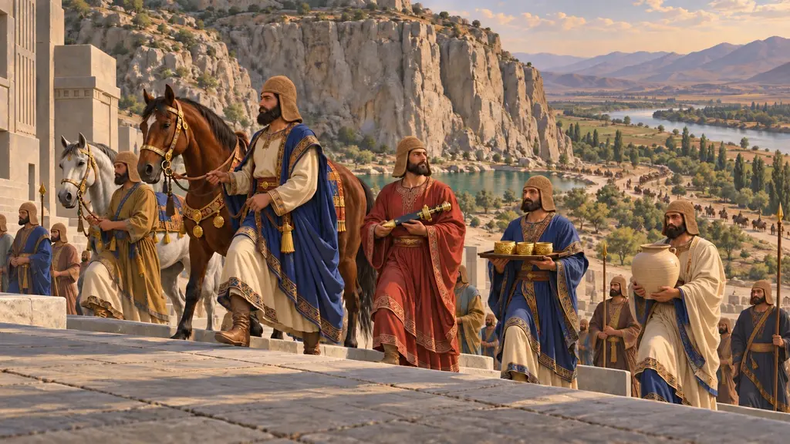
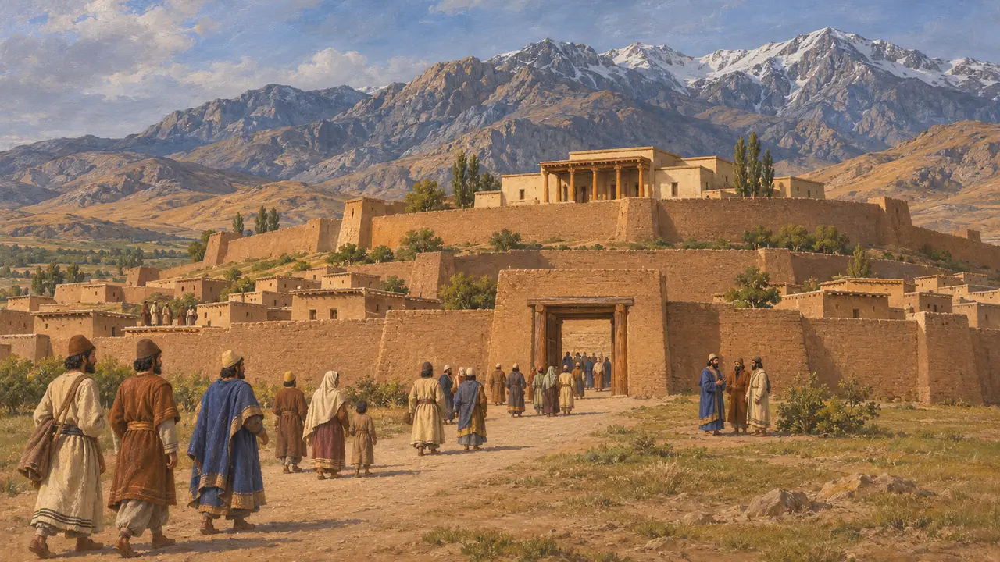
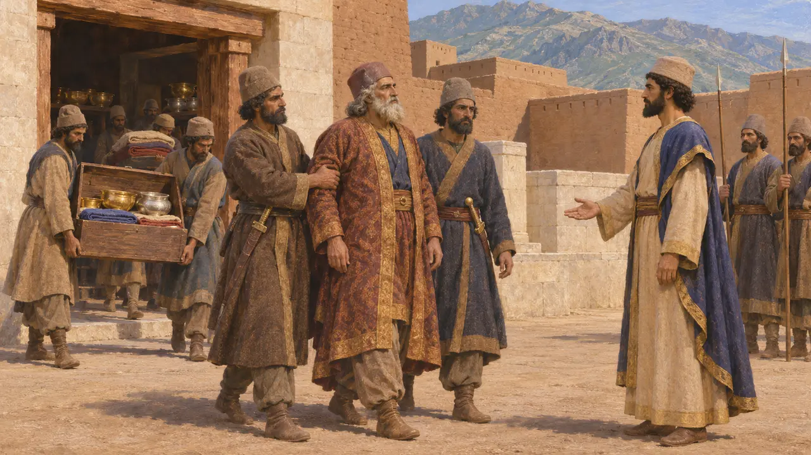
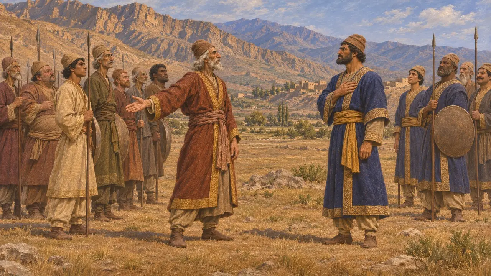
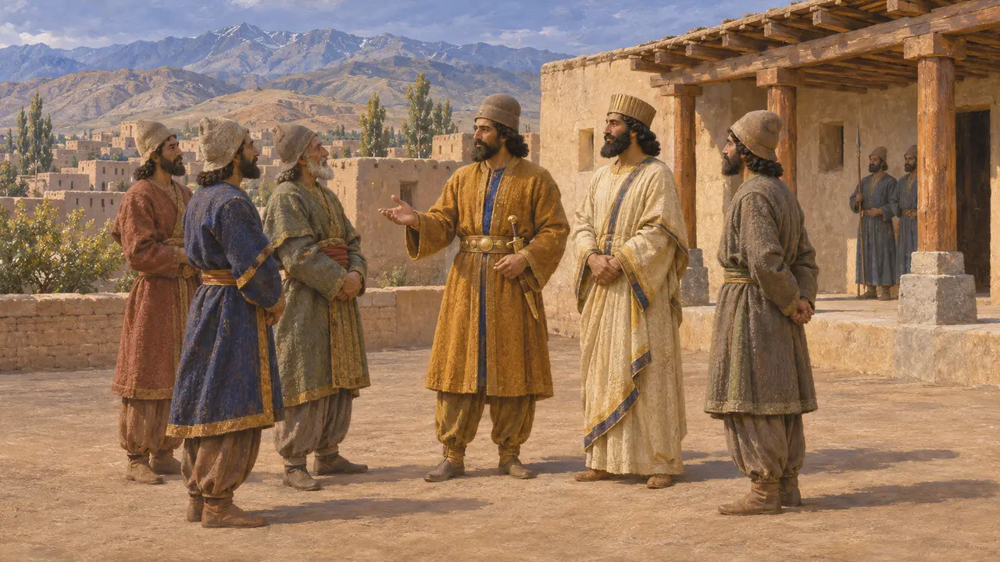
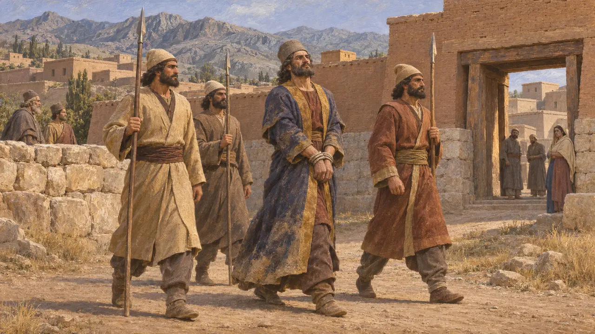
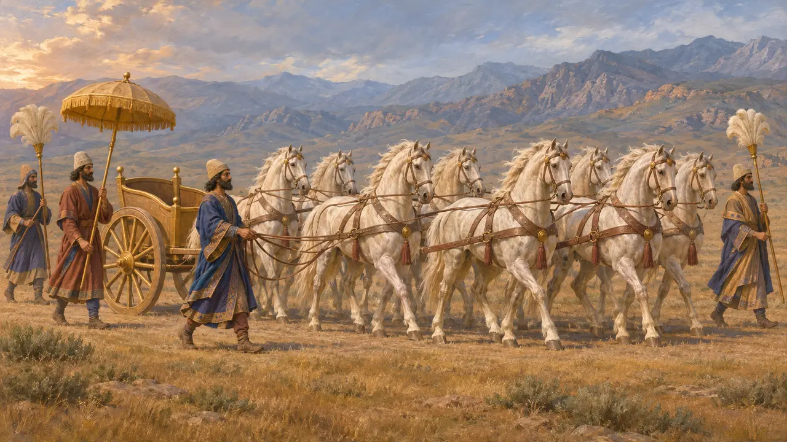

Médie
Patrie des Mèdes sur le plateau iranien occidental, avant et après 550 av. J.-C.
Dans le jeu : Niveau 2 : Le Porte-lance, Niveau 3 : Le Mensonge
La Médie était le pays des Mèdes, autour d'Ecbatane, dans les collines du plateau occidental. Cyrus prit son royaume à Astyage, événement généralement daté d'environ 550, et les Perses conservèrent par la suite le rang, les chevaux et les usages de cour des Mèdes. Sa révolte sous Fravartish en 522-521 fut l'un des soulèvements que Darius dut écraser au début de son règne.
Dans le jeu : Le jeu nomme la Médie dans la Chronique et dans des articles d'événements, notamment la révolte de Fravartish et le cheval niséen. Ce n'est ni un niveau, ni un lieu à part entière, et elle n'a aucune mécanique.

Le pays et la capitale
Récit antiqueHérodote dit que Déjocès rassembla les Mèdes sous l'autorité d'un seul roi et fonda Ecbatane pour en faire sa capitale. Il s'agit d'un récit grec rédigé bien après les événements, et c'est en partie un conte moral sur la royauté. L'archéologie du foyer mède est maigre, si bien que la taille et l'organisation du royaume restent mal connues.
Herodotus 1.96-98

Cyrus et la fin d'Astyage
Dans les sourcesLa Chronique de Nabonide rapporte que l'armée d'Astyage se révolta contre lui et le livra à Cyrus, et que Cyrus prit Ecbatane et emporta son argent, son or et ses biens. C'est le témoignage contemporain de la fin de la domination mède, généralement datée d'environ 550.
Nabonidus Chronicle (Babylonian Chronicles)

Hérodote sur la chute d'Astyage
Récit antiqueHérodote rapporte un récit plus long, selon lequel Harpage, lésé par Astyage, aida Cyrus à l'emporter. Cette histoire est racontée du côté grec et l'on ne peut en vérifier les détails à l'aide de documents perses.
Herodotus 1.108-130

Y a-t-il eu un empire mède ?
ContestéHérodote évoque une domination mède sur une grande partie de l'Asie avant Cyrus, et certains historiens modernes ont imaginé un empire mède. D'autres, tels que Briant, doutent que les Mèdes aient dirigé un empire organisé de cette sorte. Les inscriptions de Darius comptent la Médie parmi les pays, et des Mèdes ont servi les rois perses à de hautes charges.
P. Briant, From Cyrus to Alexander, 2002

La révolte de Fravartish
Dans les sourcesL'inscription de Behistun de Darius dit que Fravartish se prétendait Khshathrita, de la famille de Cyaxare, et qu'il se fit roi en Médie. Darius affirme avoir envoyé contre lui Hydarnès, un Perse, à la tête d'une armée, et que Fravartish fut plus tard capturé et conduit à Ecbatane, où il fut mutilé puis empalé. Cette révolte appartient à la série de soulèvements de 522-521 av. J.-C.
DB §24-25

Chevaux niséens
Récit antiqueHérodote dit que de grands chevaux appelés niséens tiraient le char sacré dans le cortège de Xerxès, et il nomme une plaine de ce nom en Médie. L'emplacement de Nisée demeure incertain.
Herodotus 7.40
Sources
- DB §24-25
- Herodotus 1.96-98
- Nabonidus Chronicle (Babylonian Chronicles)
- Herodotus 1.108-130
- P. Briant, From Cyrus to Alexander, 2002
- Herodotus 7.40